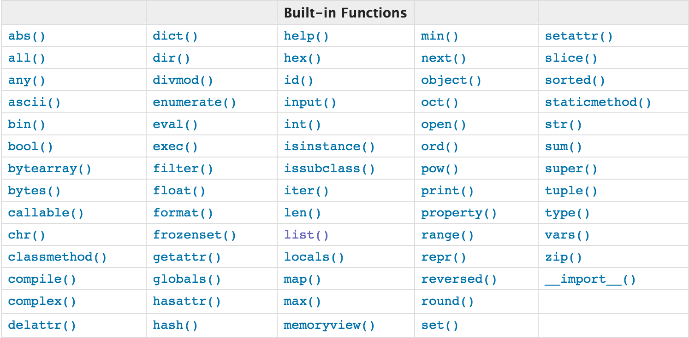

def func():
print('from func')
func()这是一个有名函数，func就是它的名字
lambda x,y: x+y匿名函数没有名字，也不能调用函数，一般与内置方法联用
lambda 参数: 返回值
salary_dict = {
'nick': 3000,
'jason': 100000,
'tank': 5000,
'sean': 2000
}如果想取上述薪资最多的名字，可以
print(max(salary_dict))
# 打印结果：tank这里是按照字典的key比较大小，但我们要的是value比较大小，返回key
def func(name):
return salary_dict[name]
print(max(salary_dict, key=func))
# 打印结果：jason用匿名函数
print(max(salary_dict, key=lambda name: salary_dict[name]))对薪资进行排序, 可以用sorted方法
sorted()工作原理：
def func(item):
return salary_dict[item]
print(sorted(salary_dict, key=func, reverse=True)) # reverse是反转
# 打印结果： ['jason', 'tank', 'nick', 'sean']匿名函数：
print(sorted(salary_dict, key=lambda name: salary_dict[name]))map()工作原理：
map()方法 就是一种映射，可以给可迭代对象一种对应关系
res = map(lambda x: x + 1, [1, 2, 3])
print(list(res))
# 打印结果：[2,3,4]filter()工作原理：
filter可以删选
res = filter(lambda x: x > 3, [1, 2, 3, 4, 45, 5, 0])
print(list(res))
# 打印结果：[4,45,5]
| 方法 | 用法 |
|---|---|
| bytes() | 解码字符：print(bytes('你好', encoding='utf-8')) |
| chr() / ord() | chr()参考ASCII码表将数字转成对应字符；ord()将字符转换成对应的数字 |
| divmod() | print(divmod(10, 3)) 打印结果：(3, 1) |
| enumerate() | 带索引的迭代 |
| eval() | 把字符串的引号去掉,留下来的是什么就是什么 |
| hash() | 是否哈希 |
| 方法 | 作用 |
|---|---|
| abs | 绝对值 |
| all | 如果全为真则为True,否则为False |
| any | 只有有一个为真,则为真,否则为假 |
| bin | 转换为二进制 |
| oct | 八进制 |
| hex | 十六进制 |
| dir | 列出模块所有方法 |
| frozenset | 不可变集合 |
| globals/loals | 列出所有全局变量/当前位置所有变量 |
| pow | 幂 |
| round | 四舍五入 |
| slice | 切片 |
| sum | 求和 |
__import__ |
通过字符串导入模块 |